2003: Home Cooking Around the World
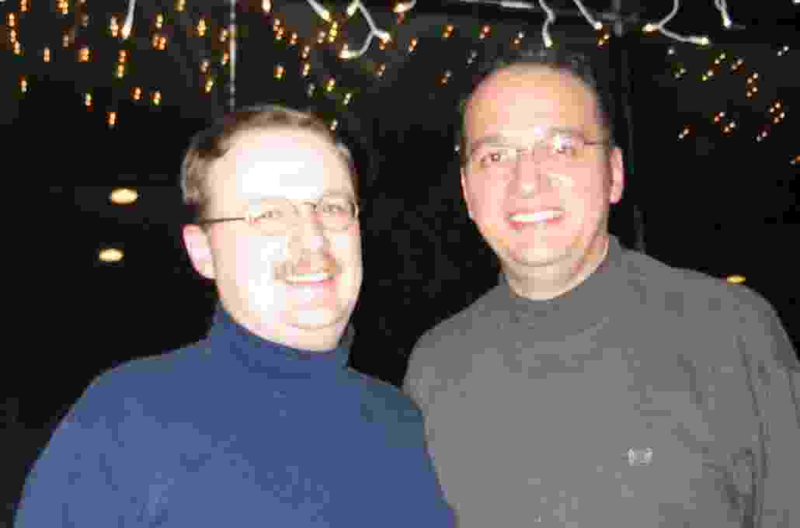
As another year ends, it is time to update
family and friends on the major events of our year. By left-clicking
in each picture below, you will be able to see a larger version.
Esta carta tambem esta' disponivel em Portugues.
In
December 2002 we came back from Oklahoma between Christmas and New
Year and spent New Year's eve with many friends at our friends Paul
and Don.
 In January we went to our traditional Jasper Ski weekend with
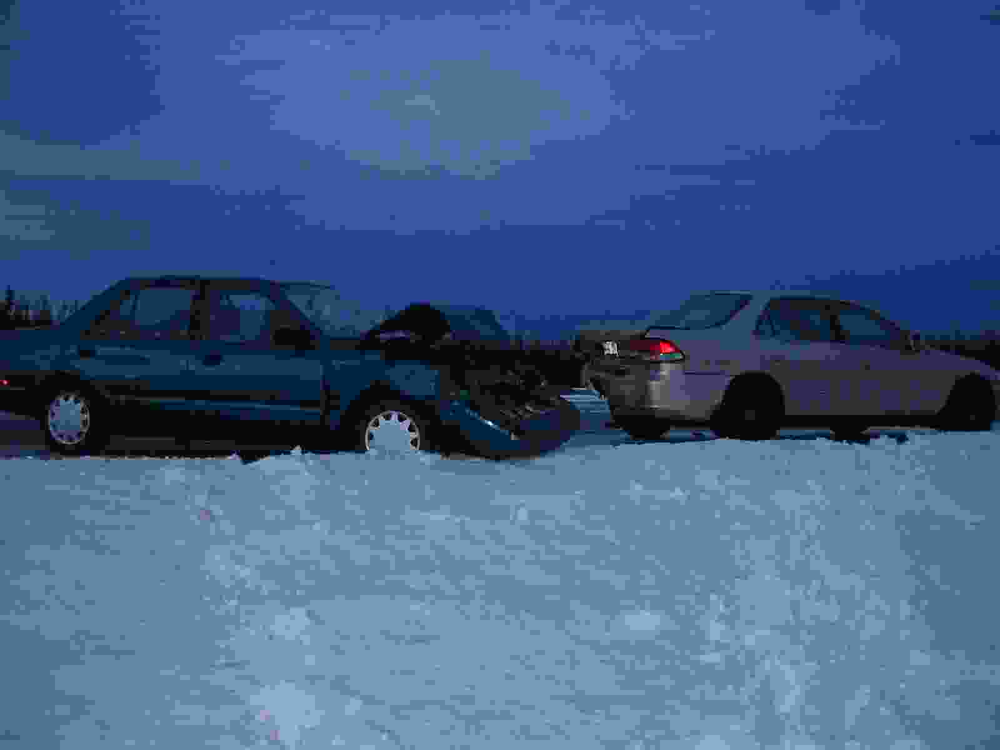
In January we went to our traditional Jasper Ski weekend with
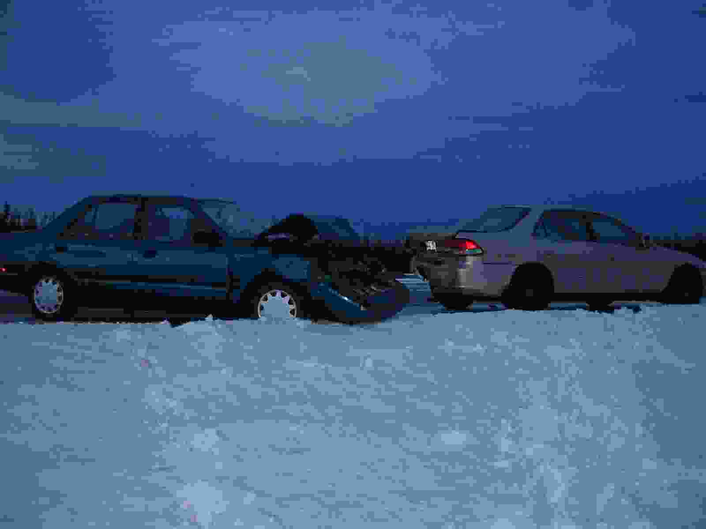
 department. The temperature was unusually warm and on the way back we
hit a patch of black ice. We ended up on the ditch after experiencing
an exciting 180 twist that woke up Scott who was laying down in the
back seat. Our friends Duane and Marie stop to try to help us and
while we were waiting for a tow truck another car hit the back of
their car and caused severe damage. To complete the excitement a forth
car lost control and drove through the ditch exactly where we were
standing seconds earlier (before we run to the woods to escape). We
spent several hours on foot deep snow. At the end our car was pulled
out, without any damage, the road was closed for several hours, and
we drove home while our friends had to take the bus because their car
could not be driven.
department. The temperature was unusually warm and on the way back we
hit a patch of black ice. We ended up on the ditch after experiencing
an exciting 180 twist that woke up Scott who was laying down in the
back seat. Our friends Duane and Marie stop to try to help us and
while we were waiting for a tow truck another car hit the back of
their car and caused severe damage. To complete the excitement a forth
car lost control and drove through the ditch exactly where we were
standing seconds earlier (before we run to the woods to escape). We
spent several hours on foot deep snow. At the end our car was pulled
out, without any damage, the road was closed for several hours, and
we drove home while our friends had to take the bus because their car
could not be driven.
Technical conferences took me to the usual places: San Francisco in
March, San Diego in June, Toronto in October. I was in San Francisco
at the height of the protests against the war in Iraq. It was good to
hear some civilian voices expressing their dissent in the USA. It was
great to cook a meal again with Kagan and Kurt at Kagan's and Irem's
new condo in San Francisco.
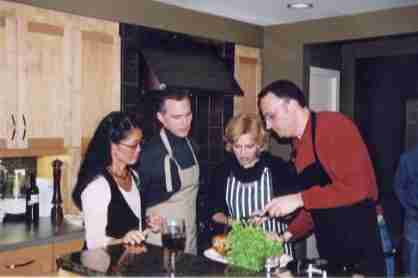
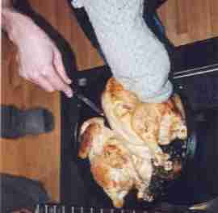
 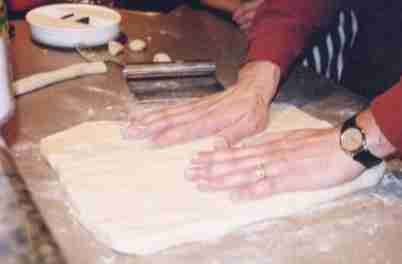
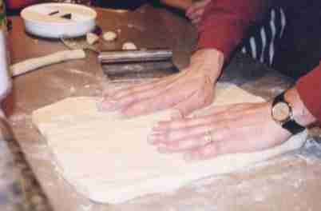


 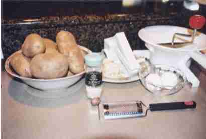
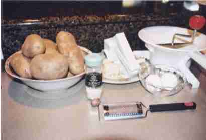
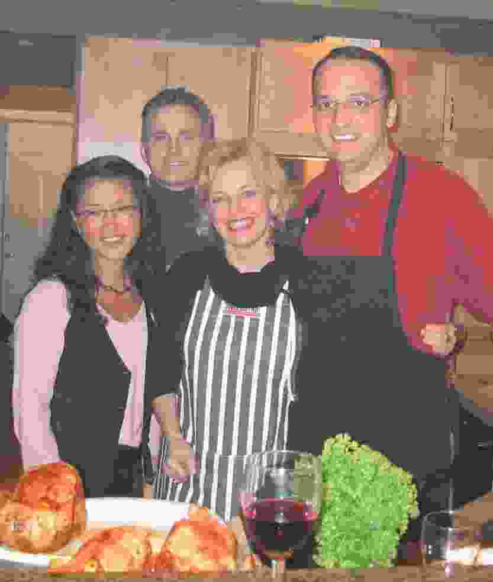
In March I started a series of "cooking parties" at our place. I plan
a menu and gather the ingredients and then invite several friends to
cook together. Usually only one member of each couple is invited to
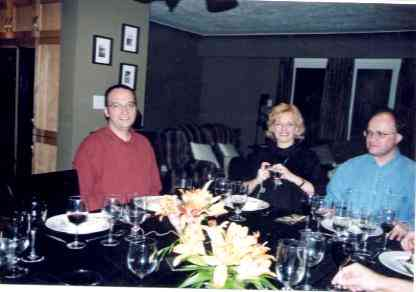
cook, while the partners arrive later for the dinner. We had lots of
fun doing that. On our first of these parties we cooked an Spinach
gratin, roasted chicken, home made potato gnocchis, and an upside down
apple tart tartin.
I spent most of the month of April in Europe. First in Warsaw to
attend a conference. It snowed for the entire week that I was in
Warsaw. Then I went to visit my friend Silvia and her new husband
Ruud. Ruud said that I got all the four days of sunshine that
Amsterdam is allowed in a year! We had a great time driving around
Amsterdam, Haarlem and Hague. It was tulip season and we saw many of
the tulip fields in bloom, we had a nice dinner high on a pier,
enjoyed a night out in the red light district and also had home cooked
meals. Besides visiting with Silvia and Ruud, it was great to go see
many of the originals of the Dutch masters at the Rijsksmuseum and an
excellent exhibit in the Van Gough's museum called "Van Gough's
Choice" which is a collection of artwork by other artists that Van
Gough had around his own atelier, or that influenced him.

 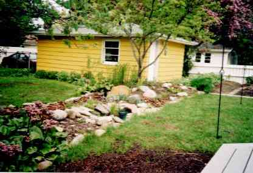
From there I went to Paris where I spent Easter by myself, visiting
museums and enjoying beautiful Spring days in Paris. I finished by
tour in Nice where I was attending another conference and was treated
to a banquet in Monaco and a dinner on a boat touring the bay in Cannes.
Inspired in some postcards that I brought back from Nice, we had our house painted "Gold Cortez" which is a bright yellow, a very provencal colour.
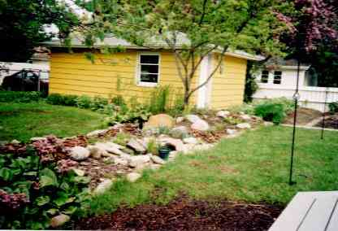
From there I went to Paris where I spent Easter by myself, visiting
museums and enjoying beautiful Spring days in Paris. I finished by
tour in Nice where I was attending another conference and was treated
to a banquet in Monaco and a dinner on a boat touring the bay in Cannes.
Inspired in some postcards that I brought back from Nice, we had our house painted "Gold Cortez" which is a bright yellow, a very provencal colour.
In May Scott's grandfather, O. D. Brown, passed away, Scott flew to
Tulsa for the funeral, but I only could go a few days later for
Scott's cousin's wedding. We had seem O. D. for the last time last
Christmas when we visited Tulsa. He was then in the hospital and his
health was poor. He was very emotional when we came to see him. Scott
is the oldest of the grandchildren and was very attached to his
grandpa. I think that the events and emotions of that week were
summarized to me when I saw Scott's aunt Diane standing in her living
room and trying to decide if the flowers used for her father's funeral
earlier in the week were still in good shape to be displayed in her
son's wedding celebration. While we were in Tulsa we also went to
visit for the last time the house where Scott's grandparents lived for
many years. Scott's grandma, Bebe, moved into an assisted living
apartment and the house was been prepared for sale. We picked a few
cooking items and cookbooks to bring home with us. We do think about
Bebe every time we use them.
In June we went to visit our friends Terry and Kate Caelli at their
vacation home in Gabriola Island off the coast of British Columbia
near Vancouver. They have a beautiful house overlooking the Sea. We
enjoyed going out to farmer's market, cooking delicious meals at home,
going out on a boat trip with Terry. Kate organized a great party at
the house where we met many of their "Island's friends", a great group
of people. We all had a wonderful time.
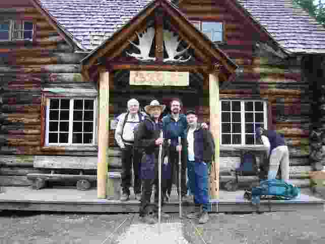
 In July we went with our friends Walter and Mario to the Skoki Lodge which is in the
back country in the Rocky Mountains about 11 kilometers from the
closest road. It is in the Lake Louise area. Although it was July, on
our first morning there we woke up to a snow blizzard that make
impossible to see anything. It passed soon enough and we were hiking
on that afternoon. As usual in these lodges the food and the
hospitality was great, and like in the others, there is no running
water or electricity. On our hike out we saw the most beautiful views
that I have ever seem in all our hikes and drives through the
mountains.
In July we went with our friends Walter and Mario to the Skoki Lodge which is in the
back country in the Rocky Mountains about 11 kilometers from the
closest road. It is in the Lake Louise area. Although it was July, on
our first morning there we woke up to a snow blizzard that make
impossible to see anything. It passed soon enough and we were hiking
on that afternoon. As usual in these lodges the food and the
hospitality was great, and like in the others, there is no running
water or electricity. On our hike out we saw the most beautiful views
that I have ever seem in all our hikes and drives through the
mountains.
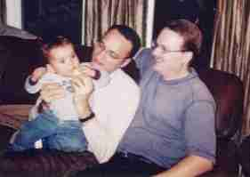
 We were very happy to spend most of July and August at home in
Edmonton enjoying the beautiful weather, and visiting with friends
often. Our friends Phil and Ken have a son, Ethan, that is now 2.
We got acquainted with new friends, Don and Alayne, that also have a
boy, Jude. Thus we got to have more kids around, which was very
nice. We also had more dinner parties to go to as both Don and Alayne
also enjoy cooking and having people over to their place.
We were very happy to spend most of July and August at home in
Edmonton enjoying the beautiful weather, and visiting with friends
often. Our friends Phil and Ken have a son, Ethan, that is now 2.
We got acquainted with new friends, Don and Alayne, that also have a
boy, Jude. Thus we got to have more kids around, which was very
nice. We also had more dinner parties to go to as both Don and Alayne
also enjoy cooking and having people over to their place.
At the end of August I attended a conference in Lisbon, Portugal. That
was my first time to Portugal and I spent the whole time in Lisbon. It
was a very good experience as I learned that several of our Brazilian
traditions are deeply rooted in Portugal. From the nice bite size
snacks, to the beautiful caramel flans to the annoying small waxed
napkings and the disgusting habit of peeing on the streets!

 The Brazilian community is growing around Edmonton, thus we had
opportunity to have some interesting Brazilian theme parties,
including a "Festa Baiana" with acaraje, vatapa and moqueca, and two
"Festas Gauchas", one with carreteiro, black beans, and vegetables, and one with "Bauru do Trianon". During Carnaval, in February,
my friend Ana and myself were featured in a local morning TV show, "The Big Breakfast",
cooking some Brazilian dishes.
The Brazilian community is growing around Edmonton, thus we had
opportunity to have some interesting Brazilian theme parties,
including a "Festa Baiana" with acaraje, vatapa and moqueca, and two
"Festas Gauchas", one with carreteiro, black beans, and vegetables, and one with "Bauru do Trianon". During Carnaval, in February,
my friend Ana and myself were featured in a local morning TV show, "The Big Breakfast",
cooking some Brazilian dishes.
I am still swimming with the Making Waves Swimming club, and was
elected co-president of the club this Summer. We changed our swimming
time and location and now Scott can come along and go to the gym
workout while I am swimming. On Thursday we all go to a coffee house
to socialize after swimming. In November the partner of one of our
swim team members passed away from cancer. Jamie died very soon after
finding that he was sick. Although we did not socialized often with
Jamie, talking with Mike and attending the service for such a young
man did make us ponder about life's priorities.
 At work things are going steady. We have our research groups
organized, and there is not a whole lot new to our teaching. I decided
to teach all the three courses that I have to teach in a year during
the Fall term, thus I was extremelly busy. On top of that I had
several commitments with committee work and conference
organizations. In the December meeting of the Faculty Evaluation
Committee I was promoted to the rank of Professor at the University of
Alberta.
At work things are going steady. We have our research groups
organized, and there is not a whole lot new to our teaching. I decided
to teach all the three courses that I have to teach in a year during
the Fall term, thus I was extremelly busy. On top of that I had
several commitments with committee work and conference
organizations. In the December meeting of the Faculty Evaluation
Committee I was promoted to the rank of Professor at the University of
Alberta.
Scott took up horse riding lessons (English style) in the Fall and
has attended every Friday. He tells me that now he is quite good
riding a trotting horse.
Edmonton has a very nice center for performing arts. We got season
tickets at the Citadel for the season that started in September and
have enjoyed a much more active cultural life. In addition we went to
see a concert by Cesaria Evora at the Winspear Centre. In December we
also went to see a wonderful performance of "A Christmas Carol" by
Charles Dicksen. I had never seem or read the play before, thus it was
a way to cover one more of my cultural gaps.
As you know we started a process for an open adoption in September of
2002. While there has been no action on our file at the adoption
agency, something quite exciting happened in November. The daughter of
an acquaintance of ours is pregnant. She is contemplating adoption
and because her mother knows us they called to ask if we are
interested. We gave her our file, and we met for tea. We spent 2 1/2
hours chatting to get acquainted. We got along very well.
The mother-to-be seems to be sure that she wants to find a good
home for her baby. She is 26 and is finishing her degree at the
University. We have known the grandmother-to-be for a couple of years
through common friends. While we are very excited at the prospect we
want ot keep our excitment in check because much may change between
now and when the baby is due in July.
We are set to fly to Brazil on Dec. 17 and we will likely spend
Christmas and New Year there at the beach with my family. My Mom had a
foot surgery recently and will be wearing a cast. Scott is coming back on
Dec. 31 but I will stay until Jan. 12 to spend some time with her.
We hope to have many more baby pictures on our end-of-year letter in 2004.
Have nice hollidays.
Nelson (& Scott)
 In January we went to our traditional Jasper Ski weekend with
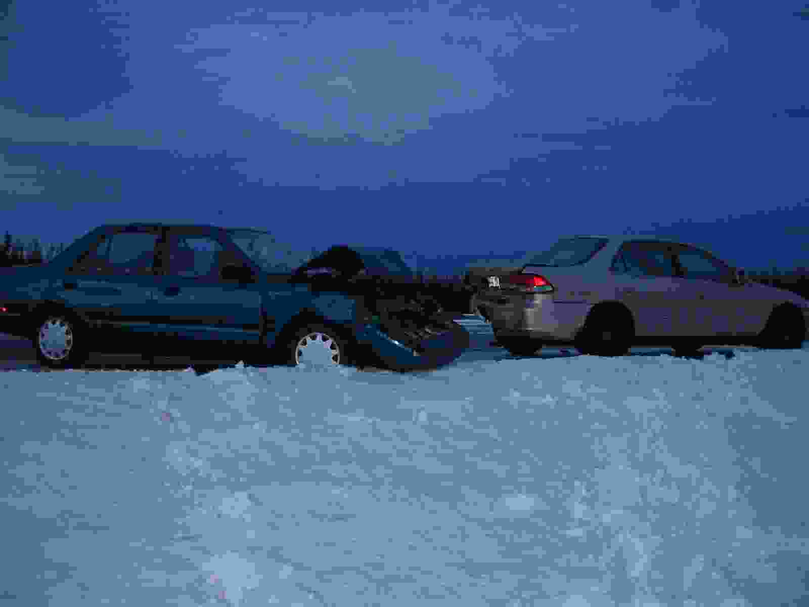
In January we went to our traditional Jasper Ski weekend with
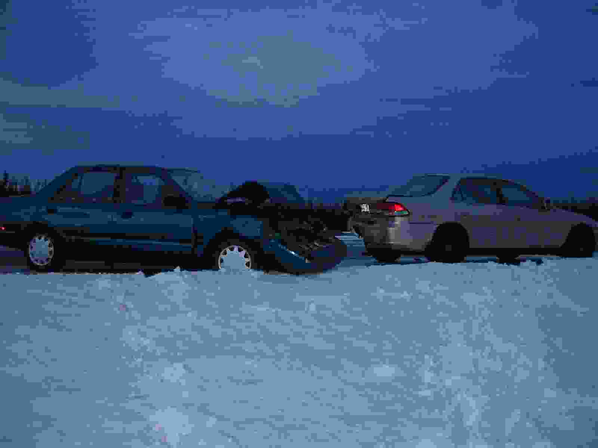
 department. The temperature was unusually warm and on the way back we
hit a patch of black ice. We ended up on the ditch after experiencing
an exciting 180 twist that woke up Scott who was laying down in the
back seat. Our friends Duane and Marie stop to try to help us and
while we were waiting for a tow truck another car hit the back of
their car and caused severe damage. To complete the excitement a forth
car lost control and drove through the ditch exactly where we were
standing seconds earlier (before we run to the woods to escape). We
spent several hours on foot deep snow. At the end our car was pulled
out, without any damage, the road was closed for several hours, and
we drove home while our friends had to take the bus because their car
could not be driven.
department. The temperature was unusually warm and on the way back we
hit a patch of black ice. We ended up on the ditch after experiencing
an exciting 180 twist that woke up Scott who was laying down in the
back seat. Our friends Duane and Marie stop to try to help us and
while we were waiting for a tow truck another car hit the back of
their car and caused severe damage. To complete the excitement a forth
car lost control and drove through the ditch exactly where we were
standing seconds earlier (before we run to the woods to escape). We
spent several hours on foot deep snow. At the end our car was pulled
out, without any damage, the road was closed for several hours, and
we drove home while our friends had to take the bus because their car
could not be driven.


{kind=link}
{kind=link}
{kind=link}
{kind=link}
{kind=link}
{kind=link}
{kind=link}